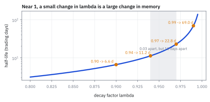
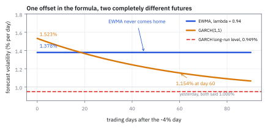
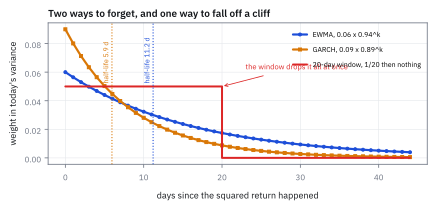
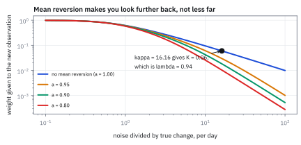

25.5 EWMA, the Kalman Filter, and GARCH as EWMA with an Offset
EWMA คือค่าประมาณที่ดีที่สุดของ variance ที่เดินแบบ random walk เมื่อมองผ่าน $r^2$ ที่มีเสียงรบกวน และเมื่อ variance ดึงกลับหาระดับปกติ สูตรที่ดีที่สุดกลายเป็น GARCH(1,1): EWMA ที่มีค่าคงที่เพิ่มหนึ่งตัว
ระบบความเสี่ยงของธนาคารใช้ EWMA ที่ $\lambda=0.94$ กับทุกหุ้น ทีมวิจัยพบว่า variance จริงของหุ้นดึงกลับหาระดับปกติ $9\times10^{-5}$ ด้วยความจำ 0.98 ต่อวัน เพื่อนร่วมทีมอ่านเจอว่า “mean reversion ทำให้ข้อมูลเก่ามีค่ามากขึ้น” จึงเสนอให้ยืด half-life จาก 11.2 วันเป็น 15.2 วัน ข้อเสนอนี้ถูกไหม และสูตรที่ดีที่สุดคืออะไร?
ลองตอบก่อนเปิดเฉลย
ยืดแล้วดีขึ้นนิดเดียว ความผิดของการติดตาม variance จริงลดจาก 33.54% เป็น 32.82% ของระดับปกติ และไม่มี EWMA ตัวไหนดีกว่า 32.78% สูตรที่ดีที่สุดคือ GARCH(1,1) ที่ $\omega=1.8\times10^{-6}$, $\alpha=0.0436$, $\beta=0.9364$ ได้ 30.51% และในสูตรนั้นน้ำหนักของข้อมูลเก่าหดครึ่งทุก 10.55 วัน สั้นกว่าเดิม ข้อมูลที่ mean reversion ให้เพิ่มไม่ได้ไปอยู่ในข้อมูลเก่า แต่ไปอยู่ในค่าคงที่ที่ดึงคำตอบกลับหาระดับปกติ
สิ่งที่เราจะสร้าง
16.4 สร้าง GARCH(1,1) และเทียบกับ EWMA ของ RiskMetrics ไว้คร่าว ๆ 25.3 สร้าง Kalman filter ที่ง่ายที่สุดเพื่อประมาณราคาจริงจากราคาที่มีความคลาดเคลื่อน หน้านี้เอา Kalman filter ตัวเดียวกันมาใช้กับ variance: สิ่งที่อยากรู้คือ variance จริงของวันนี้ สิ่งที่เห็นคือ $r_t^2$ ซึ่งเท่ากับ variance โดยเฉลี่ยแต่แกว่งมาก
ลำดับคือ นิยาม EWMA และ half-life ดูว่าทำไมคำพยากรณ์ของมันแบน คลี่ GARCH ให้เห็นว่ามันคือ EWMA บวกค่าคงที่ พิสูจน์ว่า EWMA คือ Kalman filter เมื่อ variance เดินแบบ random walk และหา $\kappa$ ที่อยู่เบื้องหลัง 0.94 แล้วเติม mean reversion เข้าไป ได้สูตร GARCH ออกมาจากแบบจำลอง วัดว่าได้ดีกว่าเท่าไร และอ่าน GARCH ของ 16.4 ในภาษาเดียวกัน
ศัพท์ที่ใช้ในหัวข้อนี้
- EWMA และ decay factor
- ค่าเฉลี่ยที่น้ำหนักของข้อมูลเก่าลดลงทีละตัวคูณ $\lambda$ ต่อวัน ใช้เป็นสูตรมาตรฐานของ risk model เชิงพาณิชย์ เพราะมี parameter ตัวเดียว
- Half-life
- จำนวนวันที่น้ำหนักของข่าวหนึ่งหดเหลือครึ่ง $\ln0.5/\ln\lambda$ ใช้สื่อสารความเร็วของแบบจำลองกับคนที่ไม่อยากดูสูตร
- State-space model
- แบบจำลองที่มีสถานะซึ่งมองไม่เห็นกับข้อมูลที่เห็นซึ่งเป็นสถานะบวกเสียงรบกวน เหมือนราคาจริงกับราคาที่บันทึกใน 25.3 ที่นี่สถานะคือ variance จริง ข้อมูลคือ $r_t^2$
- Kalman gain
- น้ำหนัก $K$ ที่ให้ข้อมูลใหม่ในสูตรผสมที่ดีที่สุดของ 25.3 สำหรับ EWMA มันคือ $1-\lambda$
- Integrated GARCH (IGARCH)
- GARCH ที่ $\alpha+\beta=1$ และ $\omega=0$ ไม่มีระดับปกติให้กลับ EWMA คือ IGARCH ในอีกชื่อ
- Persistence
- ค่า $a$ ที่ variance ส่วนเกินถูกยกยอดไปวันถัดไป ในภาษาของ GARCH คือ $\alpha+\beta$ ใช้หา half-life ของการกลับสู่ระดับปกติ
สัญลักษณ์และหน่วย
| สัญลักษณ์ | ความหมาย | หน่วย |
|---|---|---|
| $r_t,\ \hat\sigma_t^2$ | ผลตอบแทนรายวัน และ variance ที่พยากรณ์ไว้สำหรับวัน $t$ | ทศนิยม, ทศนิยม² |
| $\lambda,\ h$ | decay factor ของ EWMA และ half-life | ไม่มีหน่วย, วันทำการ |
| $x_t,\ y_t$ | variance จริงที่มองไม่เห็น และข้อมูลที่เห็น $y_t=r_t^2$ | ทศนิยม² |
| $\tau_\epsilon,\ \tau_\eta,\ \kappa$ | ขนาดการเปลี่ยนจริงของ $x$ ต่อวัน ขนาดเสียงรบกวนของ $y$ และ $\kappa=\tau_\eta/\tau_\epsilon$ | ทศนิยม², ทศนิยม², ไม่มีหน่วย |
| $P,\ K$ | variance ของความผิดก่อนเห็นข้อมูลใหม่ (หน่วย $\tau_\epsilon^2$) และ Kalman gain | ไม่มีหน่วย |
| $a,\ V$ | persistence ของ variance จริง และระดับปกติที่มันกลับไปหา | ไม่มีหน่วย, ทศนิยม² |
| $\omega,\ \alpha,\ \beta$ | parameter ของ GARCH(1,1) ตาม 16.4 | ทศนิยม², ไม่มีหน่วย |
ขั้นที่ 1 — EWMA และ half-life
นี่คือนิยามของ EWMA: variance ของพรุ่งนี้คือส่วนผสมของ $r_t^2$ ของวันนี้กับค่าประมาณเดิม แทนสมการของเมื่อวานลงไปซ้ำ ๆ แบบเดียวกับที่ 16.4 คลี่ GARCH จะเห็นน้ำหนักของข่าวแต่ละวัน
ข่าวของวันนี้ได้น้ำหนัก $1-\lambda=0.06$ ข่าวเมื่อ $i$ วันก่อนได้ $0.06(0.94)^i$ ไม่มีวันไหนหลุดออกทันที ต่างจากหน้าต่าง 20 วันที่ข่าววันที่ 21 หายทั้งก้อน น้ำหนักรวมเป็น 1 พอดี และ 12 วันล่าสุดได้น้ำหนักรวม $1-0.94^{12}=52.4\%$
half-life 11.2 วันสื่อสารง่ายกว่า $\lambda=0.94$ แต่ต้องระวัง: ใกล้ 1 ตัวเลขเล็ก ๆ ของ $\lambda$ ขยับ half-life มาก 0.97 ให้ 22.76 วัน และ 0.99 ให้ 68.97 วัน
Figure 25.5a — half-life กับ decay factor

ขั้นที่ 2 — คำพยากรณ์ของ EWMA แบนตลอดไป
พยากรณ์หลายวันต้องใส่ $r^2$ ของวันที่ยังไม่มาถึง ค่าที่ดีที่สุดที่ใส่ได้คือค่าเฉลี่ยของมัน ซึ่งคือ variance ที่พยากรณ์ไว้เอง แบบเดียวกับขั้นที่ 6 ของ 16.4 แทนลงในสูตรของ EWMA
เพราะน้ำหนักรวมเป็น 1 พอดี คำพยากรณ์ของพรุ่งนี้จึงเท่ากับของวันนี้ และเท่าเดิมไปทุกวัน หลังวันร่วง 4% จากความผันผวน 1% EWMA ตอบ 1.378% ทั้งสำหรับพรุ่งนี้และอีกหกสิบวัน GARCH ของ 16.4 ตอบ 1.523% สำหรับพรุ่งนี้ แล้วเดินกลับหา 0.949% เหลือ 1.154% ที่วันที่ 60
Figure 25.5b — ข่าวเดียวกัน คำพยากรณ์พรุ่งนี้ใกล้กัน แต่อนาคตคนละเรื่อง

ขั้นที่ 3 — คลี่ GARCH: EWMA บวกค่าคงที่
วางสองสูตรข้างกัน GARCH ที่คลี่แล้วมาจากขั้นที่ 3 ของ 16.4 ส่วน EWMA มาจากขั้นที่ 1 ความเหมือนจะเห็นทันที
สองสูตรต่างกันแค่ก้อนคงที่ข้างหน้า EWMA จึงคือ GARCH ที่ไม่มีค่าคงที่ และเมื่อไม่มีค่าคงที่ น้ำหนักรวม $\alpha/(1-\beta)$ ต้องเป็น 1 พอดี ไม่อย่างนั้นค่าประมาณจะไหลไปหาศูนย์หรือโตไม่หยุด นั่นคือ $\alpha+\beta=1$ หรือ IGARCH
ในทางกลับกัน GARCH คือ EWMA ที่น้ำหนักรวมบนข้อมูลน้อยกว่า 1 แล้วเติมส่วนที่ขาดด้วยค่าคงที่ ขั้นที่ 6 จะแสดงว่าค่าคงที่นั้นมีความหมาย ไม่ได้เป็นแค่ก้อนที่เติมให้ครบ
Figure 25.5c — น้ำหนักที่แต่ละวิธีให้กับข่าวเก่า

ขั้นที่ 4 — EWMA คือ Kalman filter ของ variance ที่เดินแบบ random walk
ถามว่ามีแบบจำลองไหนที่ EWMA เป็นคำตอบที่ถูกต้อง ไม่ใช่แค่สะดวก ใช้สองบรรทัดของ 25.3 ทุกตัวอักษร เปลี่ยนแค่ความหมาย: สถานะคือ variance จริง $x_t$ ข้อมูลคือ $y_t=r_t^2$ ซึ่งค่าเฉลี่ยเท่ากับ $x_t$ แต่แกว่งแรง นี่คือนิยามของแบบจำลอง
บรรทัดที่สามคือสมการ Riccati ของขั้นที่ 6 ใน 25.3 เมื่อวัด $P$ เป็นหน่วย $\tau_\epsilon^2$ ตัวส่วน $P+\kappa^2$ เท่ากับ $P^2$ พอดี $K$ จึงเป็น $1/P$ แล้วกลับสูตรได้ $\kappa$ จาก $\lambda=1-K$ ค่าประมาณที่ได้คือ $\hat x_{t+1|t}=(1-K)\hat x_{t|t-1}+Ky_t$ ซึ่งคือ EWMA ทุกตัวอักษร
$\lambda=0.94$ จึงแปลว่าเสียงรบกวนของ $r^2$ ดังกว่าการเปลี่ยนจริงของ variance ต่อวัน 16.16 เท่า ถ้าผลตอบแทนเป็น Normal เสียงรบกวนของ $r^2$ คือ $\sqrt2V=1.27\times10^{-4}$ ที่ $V=9\times10^{-5}$ variance จริงจึงเปลี่ยนวันละราว $7.9\times10^{-6}$ หรือ 8.75% ของระดับปกติ ซึ่งฟังขึ้น
ขั้นที่ 5 — เติม mean reversion: Riccati ที่มี a
แบบจำลองของขั้นที่ 4 ปล่อยให้ variance เดินไปไหนก็ได้ ซึ่งขัดกับข้อ 3 ของ 25.2 และกับ 16.4 ที่ความผันผวนกลับหาระดับปกติ เปลี่ยนบรรทัดแรกเป็น AR(1) ของ 16.2 รอบ $V$ ขั้นตอนผสมของ 25.3 ยังเหมือนเดิม แต่ตอนเดินหน้าหนึ่งวัน ความผิดถูกคูณด้วย $a$ variance ของมันจึงคูณ $a^2$ ก่อนบวก $\tau_\epsilon^2$
คูณ $P+\kappa^2$ ทั้งสองข้างของบรรทัดที่สองแล้วย้ายข้าง จะได้ $P^2+cP-\kappa^2=0$ รากบวกคือบรรทัดที่สี่ เมื่อ $a=1$ จะได้ $c=-1$ และกลับไปเป็นขั้นที่ 4 ที่ $P=16.667$ และ $K=0.06$
ที่ $\kappa$ เท่าเดิม mean reversion ทำให้ $K$ ลดจาก 0.06 เป็น 0.04446 นี่คือข้อสังเกตที่ทำให้หลายคนสรุปว่าควรมองย้อนหลังนานขึ้น แต่ $K$ คือน้ำหนักในขั้นผสม ยังไม่ใช่สูตรที่ใช้พยากรณ์ ขั้นถัดไปแสดงว่าสูตรพยากรณ์มี $a$ คูณอยู่ด้วย
ขั้นที่ 6 — สูตรที่ดีที่สุดคือ GARCH(1,1)
หลังผสมข้อมูลวันนี้แล้ว ค่าที่ดีที่สุดของพรุ่งนี้คือค่าเฉลี่ยของ $x_{t+1}$ เมื่อรู้ข้อมูลถึงวันนี้ ตามบรรทัดแรกของขั้นที่ 5 มันคือ $V+a(\hat x_{t|t}-V)$ แทนขั้นผสมของ 25.3 ลงไปแล้วจัดกลุ่มใหม่
บรรทัดที่สามและสี่คือ GARCH(1,1) ทุกตัวอักษร: ค่าคงที่ $\omega$ บวก $\alpha$ คูณ $r_t^2$ บวก $\beta$ คูณ variance ที่พยากรณ์ไว้เมื่อวาน โดย $\alpha+\beta=a=0.98$ และระดับปกติ $\omega/(1-\alpha-\beta)=V$ พอดี GARCH จึงไม่ใช่ EWMA ที่เติมค่าคงที่ตามใจ มันคือ Kalman filter ของ variance ที่ดึงกลับหาระดับปกติ
เมื่อ $a=1$ ค่าคงที่หายไปและได้ EWMA ของขั้นที่ 4 คืนมา ถ้าลืมตัวคูณ $a$ แล้วใช้ $(1-K)\hat x+Ky$ ตรง ๆ จะได้ EWMA ที่ $\lambda=0.9555$ ซึ่งคือ half-life 15.24 วันของข้อเสนอในโจทย์เปิดหน้า
ขั้นที่ 7 — ข้อมูลเก่าหดเร็วขึ้น ไม่ใช่ช้าลง
โจทย์ให้อะไรมาบ้าง: น้ำหนักของ $r^2$ เมื่อ $j$ วันก่อนใน GARCH คือ $\alpha\beta^j$ half-life ของน้ำหนักนั้นจึงคือ $\ln0.5/\ln\beta$ ส่วน half-life ของการกลับหาระดับปกติคือ $\ln0.5/\ln a$ เทียบทั้งสองตัวที่ $\kappa=16.16$ เท่ากันทุกแถว
| $a$ | $K$ | $\beta=a(1-K)$ | half-life ของข้อมูล | ถ้าลืม $a$ | half-life ของการกลับ |
|---|---|---|---|---|---|
| 1.00 | 0.0600 | 0.9400 | 11.20 วัน | 11.20 วัน | ไม่กลับ |
| 0.98 | 0.0445 | 0.9364 | 10.55 วัน | 15.24 วัน | 34.31 วัน |
| 0.95 | 0.0299 | 0.9216 | 8.49 วัน | 22.87 วัน | 13.51 วัน |
| 0.90 | 0.0184 | 0.8835 | 5.60 วัน | 37.42 วัน | 6.58 วัน |
คำตอบ: ยิ่ง mean reversion แรง $K$ ยิ่งเล็ก แต่ $\beta=a(1-K)$ ก็เล็กลงด้วย ข้อมูลเก่าจึงหดเร็วขึ้น ที่ $a=0.98$ จาก 11.20 เป็น 10.55 วัน ข้อมูลที่ mean reversion ให้เพิ่มคือความรู้ว่า variance อยู่ไม่ไกลจาก $V$ และความรู้นั้นเข้ามาทางค่าคงที่ $\omega$ ซึ่งแทนที่ 2% ของค่าประมาณด้วย $V$ ทุกวัน คอลัมน์ “ถ้าลืม $a$” ใช้ $\ln0.5/\ln(1-K)$ ซึ่งให้คำตอบกลับทิศ
ตรวจเองใน 10 วินาที: $0.98\times(1-0.0445)=0.9364$ และ $0.9364\lt0.94$ จึงจางเร็วกว่า EWMA เดิม
Figure 25.5d — Kalman gain ลดลงเมื่อเสียงรบกวนดังและเมื่อมี mean reversion

ขั้นที่ 8 — ได้ดีกว่าเท่าไร: ความผิดของการติดตาม variance จริง
โจทย์ให้อะไรมาบ้าง: โลกตามขั้นที่ 5 ที่ $V=9\times10^{-5}$, $a=0.98$, $\tau_\eta=\sqrt2V$ และ $\kappa=16.16$ ตัวติดตามทุกตัวเขียนได้เป็น $f_{t+1}=c+bf_t+gy_t$ ความผิด $f_{t+1}-x_{t+1}$ มี variance ที่คิดปิดได้ด้วยอนุกรมเรขาคณิตของ AR(1): $\operatorname{Cov}(x_t,x_{t-k})=s^2a^k$ โดย $s^2=\tau_\epsilon^2/(1-a^2)$
| ตัวติดตาม | $g$ | $b$ | ความผิดเป็น % ของ $V$ |
|---|---|---|---|
| GARCH ของขั้นที่ 6 | 0.04357 | 0.93643 | 30.51% |
| EWMA เดิม | 0.06 | 0.94 | 33.54% |
| ข้อเสนอในโจทย์ | 0.04446 | 0.95554 | 32.82% |
| EWMA ที่ดีที่สุด | 0.0408 | 0.9592 | 32.78% |
| ใช้ $V$ ทุกวัน | 0 | – | 43.98% |
คำตอบ: ตัวเลขคือรากของ MSE เป็น % ของ $V$ สูตรของขั้นที่ 6 ได้ 30.51% ซึ่งเท่ากับ $\sqrt P\,\tau_\epsilon/V$ ของ Kalman filter พอดี ข้อเสนอยืด half-life ดีขึ้นจาก EWMA เดิมแค่ 0.72 จุด และ EWMA ที่ดีที่สุดยังแพ้ GARCH 2.28 จุด ถ้าใช้แค่ค่าคงที่ $V$ ทุกวัน ความผิดคือ SD ของ variance จริงเอง 43.98% โค้ดท้ายหน้าจำลอง 200,000 วัน (seed 25) ได้ 30.23%, 33.19% และ 32.43% ตามลำดับ
ตรวจเองใน 10 วินาที: ทุกตัวต่ำกว่า 43.98% ของการใช้ $V$ ตรง ๆ และ GARCH ต่ำที่สุดเพราะมันคือค่าผสมเชิงเส้นที่ดีที่สุดตามขั้นที่ 5 ของ 25.3
ขั้นที่ 9 — GARCH ของ 16.4 ในภาษาของ Kalman
กลับทางขั้นที่ 6: จาก GARCH ใด ๆ อ่าน $a=\alpha+\beta$, $K=\alpha/a$ และ $V=\omega/(1-a)$ ได้ทันที แล้วหา $\kappa$ ที่ทำให้ขั้นที่ 5 ให้ $K$ นั้น ลองกับ GARCH ของ 16.4 ที่ $\omega=1.8\times10^{-6}$, $\alpha=0.09$, $\beta=0.89$
GARCH ของ 16.4 คือ Kalman filter ของโลกเดียวกันที่เชื่อว่าเสียงรบกวนของ $r^2$ ดังกว่าการเปลี่ยนจริงแค่ 8.80 เท่า มันจึงให้น้ำหนักข่าวใหม่มากกว่า
หลังวันร่วง 4% จากความผันผวน 1% GARCH ของ 16.4 ตอบ 1.532% ตัวกรองของขั้นที่ 6 ($\kappa=16.16$) ตอบ 1.285% และ EWMA ตอบ 1.378% ที่วันที่ 60 สองตัวแรกเหลือ 1.154% และ 1.060% ส่วน EWMA ยัง 1.378%
ในโลกที่ $\kappa=16.16$ จริง GARCH ของ 16.4 ติดตามได้ความผิด 33.88% แย่กว่า EWMA เดิมด้วยซ้ำ GARCH ไม่ได้ดีกว่าโดยอัตโนมัติ ค่าของมันต้องตรงกับเสียงรบกวนของข้อมูล
คำถามที่ควรถามออกมาดัง ๆ
ถ้า GARCH ดีกว่า ทำไมผู้ให้บริการ risk model ยังใช้ EWMA? เพราะ EWMA ใช้ $\lambda$ ตัวเดียวกับหุ้นหลายพันตัวได้โดยไม่ต้องประมาณอะไร ส่วน GARCH ต้องประมาณสามค่าต่อหุ้น ต้องดูแล ตรวจ และอธิบายลูกค้า ขั้นที่ 8 บอกว่าส่วนที่ได้เพิ่มมีจริงแต่ไม่ใหญ่ ราว 3 จุดของความผิดในตัวอย่างนี้ และขั้นที่ 9 บอกว่า GARCH ที่ค่าไม่ตรงอาจแย่กว่า EWMA
variance ในแบบจำลองสองบรรทัดติดลบได้ไหม? ได้ เพราะสถานะบวกลบก้อนสุ่ม Normal ได้อิสระ และ $r^2$ ก็ไม่ใช่ Normal แบบจำลองของ Harvey และ Shephard แก้โดยใช้ $\ln r_t^2$ เป็นข้อมูล ถ้า $r_t=\sigma_t\xi_t$ กับ $\xi_t$ Normal จะได้ $\ln r_t^2=\ln\sigma_t^2+\ln\xi_t^2$ ซึ่ง $\ln\xi_t^2$ มีค่าเฉลี่ย −1.27 และ SD 2.22 (สมบัติของ Normal) ความผันผวนที่ได้เป็นบวกเสมอ
ความผิดที่ให้คำตอบผิดโดยไม่มีอะไรเตือน
ใช้ EWMA ตอบคำถามระยะยาว: ขั้นที่ 2 แสดงว่าคำพยากรณ์ของ EWMA แบนตลอดไป หลังวันร่วงมันบอกว่าความผันผวน 1.378% จะอยู่ไปทุกวัน ขณะที่ GARCH บอก 1.154% ที่วันที่ 60 งานตั้งราคา option ระยะยาวและการวางแผนทุนต้องใช้แบบจำลองที่มีระดับปกติ
ยืด half-life เพราะ mean reversion: ขั้นที่ 7 แสดงว่าสูตรที่ดีที่สุดให้ข้อมูลเก่าหดเร็วขึ้น (10.55 วัน) แล้วเติมค่าคงที่ การยืด EWMA เป็น 15.24 วันคือผลของการลืม $a$ และได้ความผิด 32.82% แทน 30.51%
ใช้ $\lambda$ เดียวกันกับทุกสินทรัพย์: $\lambda=1-K$ มาจาก $\kappa$ ของแต่ละสินทรัพย์ สินทรัพย์ที่ variance เปลี่ยนเร็วเมื่อเทียบกับเสียงรบกวนของ $r^2$ ($\kappa$ เล็ก) ควรใช้ $\lambda$ เล็กกว่า ที่ $\kappa=5$ ได้ $\lambda=0.819$ และ half-life 3.47 วัน
ปรับ $\lambda$ จนกว่า backtest จะสวย: ขั้นที่ 4 และ 5 ให้ $\lambda$ จากสมบัติของข้อมูล คือ $\kappa$ และ $a$ การจูนตามผลลัพธ์ที่อยากเห็นคือการ fit เสียงรบกวน
ใช้ทำอะไรบนโต๊ะจริง
risk model เชิงพาณิชย์ใช้ EWMA กับหุ้นทั้งจักรวาลด้วย half-life ที่เลือกจากการทดสอบ และสื่อสารด้วย half-life แทน $\lambda$ โต๊ะที่ต้องการคำพยากรณ์หลายวัน เช่นตั้งราคา option หรือกันทุน ใช้ GARCH ที่ $\alpha+\beta\lt1$ ขั้นที่ 9 ให้วิธีตรวจว่า GARCH ที่ fit มามีเหตุผลไหม: อ่าน $\kappa$ และ $a$ ของมันแล้วเทียบกับเสียงรบกวนของ $r^2$ ที่วัดได้ และ RV ของ 25.4 ใช้แทน $r^2$ เป็นข้อมูลได้ ซึ่งลด $\tau_\eta$ ลงมาก 27.3 ต่อยอดเรื่องนี้กับการปรับความผันผวนระยะสั้นของ factor model
สามโจทย์ตรวจความเข้าใจ
1. EWMA ที่ $\lambda=0.97$ มี half-life กี่วัน สอดคล้องกับ $\kappa$ เท่าไร และ 20 วันล่าสุดได้น้ำหนักรวมเท่าไร?
เฉลย
$h=\ln0.5/\ln0.97=22.76$ วัน $\kappa=\sqrt{0.97}/0.03=32.83$ เสียงรบกวนต้องดังกว่า 0.94 ราวสองเท่า น้ำหนัก 20 วันล่าสุด $1-0.97^{20}=45.6\%$ ไม่ถึงครึ่ง
2. GARCH ที่ $\omega=2\times10^{-6}$, $\alpha=0.05$, $\beta=0.90$ อ่านในภาษาของ Kalman ได้ $a$, $K$, $V$ เท่าไร และ half-life ของข้อมูลกับของการกลับหาระดับปกติคือเท่าไร?
เฉลย
$a=0.95$ $K=0.05/0.95=0.05263$ $V=2\times10^{-6}/0.05=4\times10^{-5}$ half-life ของข้อมูล $\ln0.5/\ln0.90=6.58$ วัน ของการกลับ $\ln0.5/\ln0.95=13.51$ วัน และกลับขั้นที่ 5 ได้ $\kappa=11.14$
3. ถ้าไม่มี mean reversion และ $\kappa=5$ EWMA ที่ดีที่สุดมี $\lambda$ และ half-life เท่าไร ตรวจด้วยสูตร $\kappa=\sqrt\lambda/(1-\lambda)$
เฉลย
จาก 25.3 ขั้นที่ 6: $P=\tfrac12(1+\sqrt{101})=5.5249$ $K=1/P=0.1810$ $\lambda=0.8190$ half-life $\ln0.5/\ln0.819=3.47$ วัน ตรวจ: $\sqrt{0.819}/0.181=0.9050/0.181=5.00$
คำนวณซ้ำด้วย JavaScript
รันใน Node.js ได้โดยไม่ติดตั้งแพ็กเกจ โค้ดคิด half-life แปลง $\lambda$ เป็น $\kappa$ แก้สมการ Riccati ที่มี $a$ ทั้งด้วยสูตรปิดและการวนซ้ำ แปลง Kalman เป็น GARCH และกลับ คิดความผิดของการติดตามแบบปิด ยืนยันว่า EWMA กับ GARCH ที่ $\omega=0$ ให้ผลเท่ากันทุกบิต และจำลอง 200,000 วันของแบบจำลองในขั้นที่ 5 แล้วพิมพ์ตัวเลขหลักหนึ่งบรรทัด
const {sqrt, log, cos, sin, PI} = Math;
function inUnit(name, v) {
if (typeof v !== 'number' || !(v > 0 && v < 1)) throw new RangeError(`${name} must be strictly between 0 and 1`);
return v;
}
function positive(name, v) {
if (typeof v !== 'number' || !Number.isFinite(v) || !(v > 0)) throw new RangeError(`${name} must be a positive number`);
return v;
}
const halfLife = lambda => log(0.5) / log(inUnit('lambda', lambda));
// Step 4: random-walk variance, P = 1/K in units of tau_e^2, so kappa = sqrt(lambda) / (1 - lambda).
const kappaFromLambda = lambda => sqrt(inUnit('lambda', lambda)) / (1 - lambda);
// Step 5: P = a^2 P k^2 / (P + k^2) + 1 gives P^2 + c P - k^2 = 0 with c = (1 - a^2) k^2 - 1.
function steadyGain(kappa, a = 1) {
positive('kappa', kappa);
if (!(a > 0 && a <= 1)) throw new RangeError('a must be in (0, 1]');
const R = kappa * kappa, c = (1 - a * a) * R - 1, P = 0.5 * (sqrt(c * c + 4 * R) - c);
return {c, P, K: P / (P + R)};
}
function iteratedGain(kappa, a = 1, steps = 5000) {
const R = positive('kappa', kappa) ** 2;
let P = 1;
for (let i = 0; i < steps; i++) P = a * a * P * R / (P + R) + 1;
return P / (P + R);
}
// Step 6: the steady Kalman filter written as GARCH(1,1).
function kalmanToGarch({kappa, a, V}) {
positive('V', V);
const {K, P} = steadyGain(kappa, a);
return {K, P, omega: (1 - a) * V, alpha: a * K, beta: a * (1 - K)};
}
// Step 9: read a GARCH(1,1) back as a Kalman filter; kappa by bisection on the gain (K falls as kappa grows).
function garchToKalman({omega, alpha, beta}) {
positive('omega', omega); positive('alpha', alpha); positive('beta', beta);
const a = alpha + beta;
if (!(a < 1)) throw new RangeError('alpha + beta must be below 1 for a long-run level');
const K = alpha / a;
let lo = 1e-6, hi = 1e6;
for (let i = 0; i < 300; i++) { const mid = sqrt(lo * hi); if (steadyGain(mid, a).K > K) lo = mid; else hi = mid; }
return {a, K, V: omega / (1 - a), kappa: sqrt(lo * hi)};
}
// Step 8: steady MSE of a tracker f(t+1) = c + b f(t) + g y(t) when x is AR(1) around V.
function trackingMse({g, b}, {a, tauE, tauH}) {
if (!(b >= 0 && b < 1)) throw new RangeError('b must be in [0, 1)');
const s2 = tauE * tauE / (1 - a * a);
return g * g * (tauH * tauH / (1 - b * b) + s2 * (1 + a * b) / ((1 - b * b) * (1 - a * b))) + s2 - 2 * g * s2 * a / (1 - a * b);
}
function mulberry32(seed) {
return () => {
seed |= 0; seed = seed + 0x6D2B79F5 | 0;
let t = Math.imul(seed ^ seed >>> 15, 1 | seed);
t = t + Math.imul(t ^ t >>> 7, 61 | t) ^ t;
return ((t ^ t >>> 14) >>> 0) / 4294967296;
};
}
function normals(rnd) {
let spare = null;
return () => {
if (spare !== null) { const s = spare; spare = null; return s; }
let u = 0;
while (u === 0) u = rnd();
const v = rnd(), R = sqrt(-2 * log(u));
spare = R * sin(2 * PI * v);
return R * cos(2 * PI * v);
};
}
// Simulate the step-5 world and run three trackers; keep the series for checking.
function simulateTracking(n, seed, world, trackers) {
if (!Number.isInteger(n) || n < 2000) throw new RangeError('n must be a whole number of at least 2000 days');
const z = normals(mulberry32(seed)), x = new Float64Array(n + 1), y = new Float64Array(n);
const f = trackers.map(() => new Float64Array(n + 1).fill(world.V));
x[0] = world.V;
for (let t = 0; t < n; t++) {
y[t] = x[t] + world.tauH * z();
trackers.forEach((k, i) => { f[i][t + 1] = k.c + k.b * f[i][t] + k.g * y[t]; });
x[t + 1] = world.V + world.a * (x[t] - world.V) + world.tauE * z();
}
const rmse = f.map(fi => { let s = 0; for (let t = 1001; t <= n; t++) s += (fi[t] - x[t]) ** 2; return sqrt(s / (n - 1000)) / world.V; });
return {x, y, f, rmse};
}
const V = 9e-5, a = 0.98, kappa = kappaFromLambda(0.94), tauH = sqrt(2) * V, tauE = tauH / kappa;
const world = {V, a, tauE, tauH}, g = kalmanToGarch({kappa, a, V});
const trackers = [{c: g.omega, b: g.beta, g: g.alpha}, {c: 0, b: 0.94, g: 0.06}, {c: 0, b: 1 - g.K, g: g.K}];
let bestLambda = 0.8, bestMse = Infinity;
for (let l = 0.8; l < 0.9999; l += 0.0001) { const m = trackingMse({g: 1 - l, b: l}, world); if (m < bestMse) { bestMse = m; bestLambda = l; } }
const track = simulateTracking(200000, 25, world, trackers);
// EWMA and GARCH with omega = 0, alpha = 1 - lambda, beta = lambda on the same data.
let ew = V, ga = V, maxGap = 0;
const lam = 0.94, garchZero = {omega: 0, alpha: 1 - lam, beta: lam};
for (const yt of track.y) {
ew = (1 - lam) * yt + lam * ew;
ga = garchZero.omega + garchZero.alpha * yt + garchZero.beta * ga;
maxGap = Math.max(maxGap, Math.abs(ew - ga));
}
const g164 = garchToKalman({omega: 1.8e-6, alpha: 0.09, beta: 0.89});
const shock = 0.04 ** 2, before = 0.01 ** 2, path = (v, h) => V + a ** h * (v - V);
const tomorrow = {garch164: 1.8e-6 + 0.09 * shock + 0.89 * before, kalman: g.omega + g.alpha * shock + g.beta * before, ewma: 0.06 * shock + 0.94 * before};
console.log(JSON.stringify({
ewma: {halfLife: halfLife(0.94), last12: 1 - 0.94 ** 12, h97: halfLife(0.97), h99: halfLife(0.99), h90: halfLife(0.90), flat: tomorrow.ewma},
randomWalk: {kappa, gain: steadyGain(kappa), iterated: iteratedGain(kappa), noiseSd: tauH, trueChange: tauE, relChange: tauE / V},
meanReverting: {...steadyGain(kappa, a), iterated: iteratedGain(kappa, a), ...g, persistence: g.alpha + g.beta, level: g.omega / (1 - g.alpha - g.beta)},
table: [1, 0.98, 0.95, 0.9].map(aa => { const s = steadyGain(kappa, aa), b = aa * (1 - s.K);
return {a: aa, K: s.K, beta: b, dataHalfLife: halfLife(b), forgotA: halfLife(1 - s.K), reversion: aa < 1 ? halfLife(aa) : null}; }),
tracking: {garch: sqrt(trackingMse({g: g.alpha, b: g.beta}, world)) / V, kalman: sqrt(g.P) * tauE / V, ewma94: sqrt(trackingMse({g: 0.06, b: 0.94}, world)) / V,
proposal: sqrt(trackingMse({g: g.K, b: 1 - g.K}, world)) / V, bestLambda, best: sqrt(bestMse) / V, constant: tauE / sqrt(1 - a * a) / V,
garch164: sqrt(trackingMse({g: 0.09, b: 0.89}, world)) / V, simulated: track.rmse},
identical: maxGap,
garch164: g164,
shock: {tomorrow: Object.fromEntries(Object.entries(tomorrow).map(([k, v]) => [k, sqrt(v)])),
day60: {garch164: sqrt(path(tomorrow.garch164, 60)), kalman: sqrt(path(tomorrow.kalman, 60)), ewma: sqrt(tomorrow.ewma)}},
// ln(xi^2) for Normal xi: mean = digamma(1/2) + ln 2 = -(Euler's constant) - ln 2, variance = pi^2 / 2.
logChiSquare: {mean: -0.5772156649015329 - log(2), sd: sqrt(PI * PI / 2)},
exercises: {one: {halfLife: halfLife(0.97), kappa: kappaFromLambda(0.97), last20: 1 - 0.97 ** 20},
two: {...garchToKalman({omega: 2e-6, alpha: 0.05, beta: 0.90}), dataHalfLife: halfLife(0.90), reversion: halfLife(0.95)},
three: {...steadyGain(5), lambda: 1 - steadyGain(5).K, halfLife: halfLife(1 - steadyGain(5).K), back: kappaFromLambda(1 - steadyGain(5).K)}}
}));ที่มาที่ไป
John Muth แสดงในปี 1960 ว่าการพยากรณ์ด้วยค่าเฉลี่ยที่น้ำหนักลดแบบ exponential คือคำตอบที่ดีที่สุดเมื่อสิ่งที่พยากรณ์คือ random walk ที่มองผ่านเสียงรบกวน ในปีเดียวกับที่ Rudolf Kálmán ตีพิมพ์ตัวกรองของเขา J.P. Morgan เผยแพร่ RiskMetrics ในปี 1994 พร้อม $\lambda=0.94$ สำหรับข้อมูลรายวัน และ Andrew Harvey กับ Neil Shephard เสนอแบบจำลองที่ใช้ $\ln r^2$ ช่วงกลางทศวรรษ 1990
ข้อจำกัด: เลือกอันไหน
| เรื่อง | EWMA | GARCH(1,1) | ผลเวลาใช้งาน |
|---|---|---|---|
| parameter ต่อหุ้น | ไม่มี ใช้ $\lambda$ ร่วมกันได้ | สามค่า ต้องประมาณแยก | จักรวาลหลายพันตัว EWMA ดูแลง่ายกว่ามาก |
| พยากรณ์พรุ่งนี้ | ดี | ดีกว่าเล็กน้อยถ้าค่าตรงกับข้อมูล | ขั้นที่ 8: ต่างกันราว 3 จุดของความผิด |
| พยากรณ์หลายเดือน | แบน ใช้ไม่ได้ | กลับหาระดับปกติ | option ระยะยาวและการกันทุนต้องใช้ GARCH หรือดีกว่า |
| ข่าวดีกับข่าวร้าย | เท่ากัน | เท่ากัน | ต้องใช้รุ่นที่แยกเครื่องหมายอย่าง GJR ใน 16.4 |
| รูปของเสียงรบกวน | แบบจำลองสองบรรทัดถือว่าเสียงรบกวนของ $r^2$ ขนาดคงที่ ของจริงโตตาม variance | ใช้ $\ln r^2$ หรือ RV ของ 25.4 เป็นข้อมูลแทน | |
สิ่งที่ควรตอบได้หลังอ่าน
- EWMA ให้น้ำหนัก $(1-\lambda)\lambda^i$ ซึ่งรวมกันได้ 1 half-life ที่ $\lambda=0.94$ คือ 11.20 วัน และคำพยากรณ์ของมันแบนตลอดไป
- GARCH ที่คลี่แล้วคือ EWMA บวกค่าคงที่ ทั้งสองเท่ากันเมื่อ $\omega=0$, $\alpha=1-\lambda$, $\beta=\lambda$
- EWMA คือ Kalman filter ของ variance ที่เดินแบบ random walk และ $\kappa=\sqrt\lambda/(1-\lambda)$: 0.94 แปลว่าเสียงรบกวนของ $r^2$ ดังกว่าการเปลี่ยนจริง 16.16 เท่า
- เมื่อ variance ดึงกลับด้วย $a$ สูตรที่ดีที่สุดคือ GARCH ที่ $\omega=(1-a)V$, $\alpha=aK$, $\beta=a(1-K)$: ที่ $a=0.98$ ได้ 0.04357 และ 0.93643 ข้อมูลเก่าหดเร็วขึ้น (10.55 วัน) ไม่ใช่ช้าลง
- ความผิดของการติดตามคือ 30.51% สำหรับ GARCH นั้น 32.78% สำหรับ EWMA ที่ดีที่สุด และ GARCH ของ 16.4 อ่านได้ว่าเชื่อ $\kappa=8.80$
บทที่ 25 จบที่หุ้นทีละตัว: ผลตอบแทนที่สะอาด นิสัยของมัน ราคาที่วัดผิด ความผันผวนที่วัดได้ และการเดินมันไปข้างหน้า 26.1 เริ่มจากหุ้นหลายพันตัวพร้อมกัน ซึ่งสิ่งที่สำคัญที่สุดคือการที่พวกมันขยับไปด้วยกัน